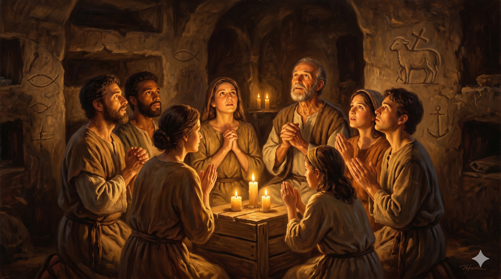

밧모 섬의 절벽 끝에 노년의 요한이 무릎을 꿇고 두 손을 하늘로 향한 채 기도하는 모습 — 그의 앞으로 바다가 펼쳐지고, 구름 사이로 한 줄기 강렬한 황금빛 빛이 수직으로 내려오며, 요한의 흰 수염과 겉옷이 바람에 가볍게 흔들린다. 성경 전체의 마지막 기도를 드리는 사도의 황혼
"나 예수는 교회들을 위하여 내 사자를 보내어 이것들을 너희에게 증언하게 하였노라 나는 다윗의 뿌리요 자손이니 곧 광명한 새벽 별이라 하시더라 성령과 신부가 말씀하시기를 오라 하시는도다 듣는 자도 오라 할 것이요 목마른 자도 올 것이요 또 원하는 자는 값없이 생명수를 받으라 하시더라 … 이것들을 증언하신 이가 이르시되 내가 진실로 속히 오리라 하시거늘 아멘 주 예수여 오시옵소서" — 요한계시록 22:16–17, 20
요한계시록 22장은 성경 전체의 마지막 장입니다. 그리고 그 끝에 요한이 드린 기도가 있습니다. "아멘 주 예수여 오시옵소서." 아람어로는 "마라나타(Maranatha)" — 초대교회 성도들이 예배 때마다 함께 외쳤던 그 기도입니다. 밧모 섬에 유배된 노년의 요한은 뜨거운 환상을 모두 받아 기록한 후, 마지막으로 이 짧고 간결한 기도를 드립니다. 그 안에는 수십 년간의 신앙 여정 전체가 담겨 있습니다. 갈릴리 어부로 부름받아, 십자가를 지켜보고, 빈 무덤을 달려가고, 밧모 섬에서 환상을 받기까지 — 그 모든 삶이 이 한 마디 기도로 귀결됩니다.
"내가 진실로 속히 오리라"는 예수님의 약속에 요한은 "아멘"으로 응답합니다. 이 아멘은 단순한 동의가 아닙니다. 전 생애를 걸고 검증한 고백입니다. 요한은 열두 제자 중 유일하게 순교하지 않고 장수한 사도입니다. 동료들이 하나씩 순교해 가는 것을 지켜보면서도, 박해와 유배 속에서도, 그는 여전히 "오시옵소서"라고 기도합니다. 이 기도에는 절망이 없습니다. 오직 기대와 신뢰와 사랑이 있습니다. 그것이 사랑받은 제자의 마지막 모습입니다.

초대교회 카타콤(지하 예배처)에서 어둠 속에 모인 성도들이 손을 맞잡고 "마라나타(오소서, 주님)"를 외치는 장면 — 벽면에는 물고기와 양의 상징이 새겨져 있고, 촛불이 그들의 얼굴을 따스하게 비추며, 핍박 속에서도 소망으로 타오르는 공동체의 기도가 느껴진다
"주 예수여 오시옵소서"는 세상에 지친 사람의 도피가 아닙니다. 이 세상이 아직 완성되지 않았음을 알고, 완성하실 분을 기다리는 소망의 기도입니다. 요한이 이 기도를 드릴 수 있었던 것은 예수님을 직접 알고 사랑했기 때문입니다. 우리도 오늘 이 기도를 드릴 수 있습니다. 지금 삶이 힘들고 세상이 어지럽고 미래가 불확실할 때, "아멘 주 예수여 오시옵소서"라는 기도는 하나님의 최후 승리를 신뢰하는 고백이 됩니다.
성령과 신부가 함께 말씀합니다. "오라." 요한계시록의 마지막 초청은 조건이 없습니다. "목마른 자도 올 것이요 또 원하는 자는 값없이 생명수를 받으라." 오늘 우리가 할 일은 이 초청에 응하는 것입니다. 요한이 걸어온 길 — 부르심에서 시작해 사랑으로 마친 그 길 — 은 오늘도 열려 있습니다. 당신도 그 길 위에 있습니다.
성경의 마지막 기도는 여섯 글자입니다: "오시옵소서."
요한의 평생이 이 기도에 담겼습니다.
오늘 당신의 기도도 이 소망으로 마치십시오.